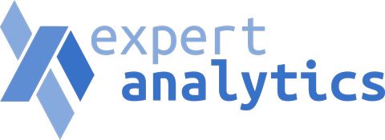

Between wells, the rock is a guess.
Every well is a decision about ground nobody has looked at. The measurements are thin, the gaps between them are enormous, and someone still has to say what is down there before the drill turns.
Veles Labs is building a world model of the Earth’s crust. It learns how the subsurface actually fits together, so it can describe the rock between the measurements the way a geologist would, and say how sure it is.
We started in Norway because Norway publishes more of its subsurface than anywhere else on Earth. What the model learns there carries to the basins next door and to every basin that looks like them.
- Commercial partner
- Expert Analytics, Oslo
- What it learns from
- Norway’s open record of its continental shelf
- Who it is for
- Teams drilling and exploring in oil and gas, carbon storage, hydrogen and geothermal
A model you can ask about rock.
Subsurface teams work from sparse wells and surveys that stop where the budget did. Everything in between gets filled in by hand, by people who are very good at it and badly outnumbered.
We train on Norway’s open record of its continental shelf, one of the most complete public subsurface archives in the world. Rather than learning one field at a time, the model learns the structure of the crust itself: which layers follow which, how they thin and tilt and break, and what that implies about the ground between two wells.
Ask it what is at a depth and a location, and it answers with the rock and its own confidence. That turns a blank space on a map into something a team can argue with.
-
Fits the tools you have
Delivered as a model licence and an API into the subsurface software your team already works in. Nothing new to adopt.
-
Built on public data
Trained on Norway’s open continental shelf record, so what it knows can be checked against the same data anyone can download.
-
Honest about doubt
Every answer carries its own confidence. A model that hides uncertainty is worse than no model when a well costs what a well costs.
-
One model, four industries
The same rock matters to oil and gas, carbon storage, geological hydrogen and geothermal. They all need to know what is between the wells.
The money is already being spent on guessing.
Exploration is not a market we have to create. Operators spend billions a year deciding where to drill, and Norway is both the densest data and the most open door.

How we reach operators
Expert Analytics already builds data and modelling systems for Norwegian oil and gas. They take our model to the operators they work with, which means we arrive through a company those teams already trust.
Veles Labs is a small team in Oslo and New York, with advisers who know the science and the market we are selling into.